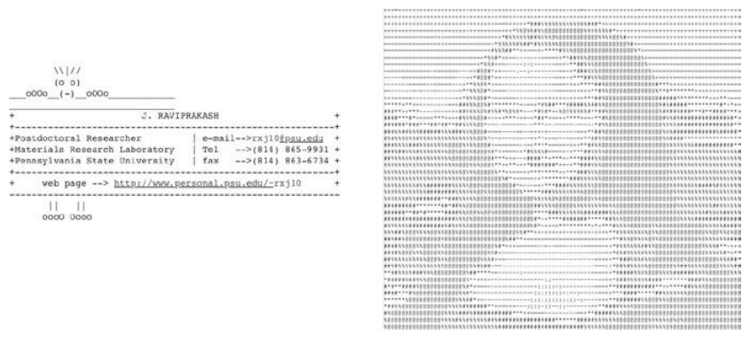
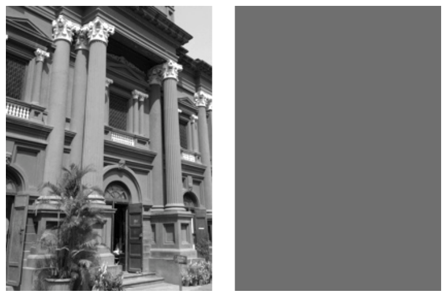
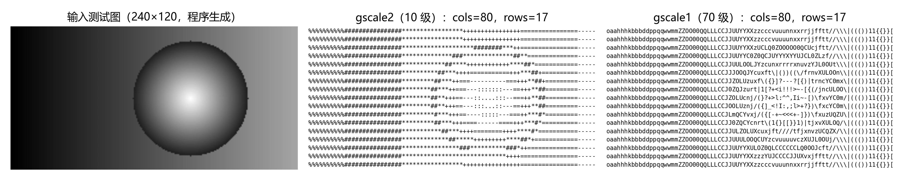
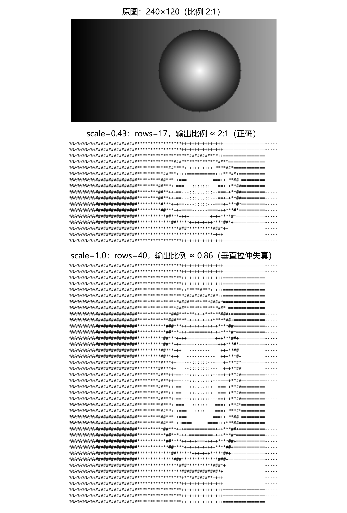

第 6 章 ASCII 文本图形#
本章解决：如何把一张图像变成由纯文本字符组成的图形——把图像切成 M×N 个小块，用每块的平均亮度到灰度梯度字符串里查出对应的 ASCII 字符，最终拼出一幅"远看是画、近看是字"的作品；顺带解决显示字体横纵比带来的失真问题。 承上启下：Pillow 读取图像、numpy 求平均的组合只是本章的轻量热身，真正的接力在下一章——第 7 章照片马赛克把"小块平均 → 查表替换字符"升级成"小块平均 → 拼真实小图"，
convert('L')、crop()在那里原样复用；argparse 命令行解析则沿用第 1、2 章的套路。
📓 章代码：nb/ch06.ipynb（分节代码；ch01–08 含固定种子实跑输出，ch09–14 为完整实现待硬件环境）
20 世纪 90 年代，电子邮件占据统治地位，图形处理能力很有限，常见的做法是在电子邮件中包含一个签名——由文本制作的图形，一般称为 ASCII 文本图形（ASCII 是一个简单的字符编码方案），见图 6.1。如今因特网已经让共享图像容易很多，但出身卑微的文本图形并没有消失。

ASCII 文本图形的源头是 19 世纪后期出现的打字机文本图形——用打字机的有限字符在纸上"拼"出画面。20 世纪 60 年代，计算机的图形处理硬件还很弱，ASCII 被用来表示图形；今天，ASCII 文本图形继续作为因特网上的一种表现形式，网上能找到各种创意例子。
这个项目用 Python 创建一个程序，从图像生成 ASCII 文本图形。程序让你指定输出（文本列数）的宽度，并设置垂直比例因子；还支持两种灰度值到 ASCII 字符的映射：稀疏的 10 级映射和更精细校正的 70 级映射。要从图像生成 ASCII 文本图形，需要学习如何做到以下几点：
- 用 Pillow 将彩色图像转换成灰度图像，它是 Python 图像库（PIL）的一个分支；
- 使用 numpy 计算灰度图像的平均亮度；
- 用一个字符串作为灰度值的快速查找表。
6.0 本章导图#
6.1 工作原理#
项目利用了这样一个事实：从远处看，我们会把灰度图像看成是它们亮度的平均值。例如图 6.2，左边是一张建筑物的灰度图像，旁边是填充了该图像平均亮度值的图像——如果穿过一间屋子来看这两幅图像，它们看起来是相似的。

ASCII 文本图形的生成方法：将图像分割成小块，并用 ASCII 字符替换每一小块的平均亮度值。从远处看，因为眼睛的分辨率有限，细节大致丢失，看到的是字符组成的"平均"值——否则文本图形看起来就不那么真实了。
程序的处理流程：先把给定的图像转成 8 位灰度，让每个像素有一个灰度值，范围在 [0, 255]（8 位整数的范围）。把这个 8 位值看成亮度：0 表示黑色，255 表示白色，中间值是不同程度的灰色。接着将图像分割成 M×N 个小块构成的网格（M、N 是 ASCII 文本图形中的行和列编号），计算网格中每个小块的平均亮度值，再通过预定义的、有梯度的 ASCII 字符（一组不断增加的值）来表示 [0, 255] 范围的灰度——把每个亮度值与适当的 ASCII 字符匹配，这些字符就是亮度值的查找表。
必须用等宽字体显示。完成的 ASCII 文本图形只是一些文本行，显示文本要用 Courier 这样的等宽字体（Monospace Font）：如果每个文本字符宽度不相同，图像中的字符将无法正确地按网格排列，会得到间隔不均和失真的输出。
横纵比必须校正。所用字体的横纵比（Aspect Ratio，宽度与高度之比）也会影响最终图像：如果一个字符所占空间的横纵比与该字符取代的图像小块的横纵比不同，最终的 ASCII 字符图形就会失真——你在用一个 ASCII 字符替换图像小块，两者的形状要匹配。例如，把图像分割成正方形小块，再用一种高度被拉伸的字体替换每个小块，最终结果就会出现垂直拉伸。为了解决这个问题，程序缩放网格中的行数，以匹配 Courier 的长宽比（行数由 scale 因子控制，见 6.3.1 节）；也可以发送命令行参数修改缩放，以匹配其他字体。
拓展：0.43 这个数怎么来的
scale 的本质是"显示时每个字符格的宽高比"：小块的横纵比被设成 \(w/h = \text{scale}\)，字符在等宽字体里排成网格时，格子的宽高比 = 字符步进 ÷ 行距。Courier 的字符步进是 0.6 em（每个字符占 0.6 个字号的宽度），而终端、编辑器里一行文本的习惯行距约 1.4 个字号，两者之比 \(0.6/1.4 \approx 0.43\)——这正是默认 scale 的来历。换言之：换一种行距习惯或字体，就该相应改 --scale。本笔记 6.7 节的实跑（图 6.5）按 0.43 渲染得到正确比例，按 1.0 渲染则明显垂直拉伸。
总之，程序生成 ASCII 文本图形的步骤是：
- 将输入图像转成灰度；
- 将图像分成 M×N 个小块；
- 修正 M（行数），以匹配图像和字体的横纵比；
- 计算每个小块图像的平均亮度，然后为每个小块查找合适的 ASCII 字符；
- 汇集各行 ASCII 字符串，将它们打印到文件，形成最终图像。
6.2 所需模块#
| 模块 | 用途 |
|---|---|
| Pillow | 读取图像、访问底层数据、创建并修改图像（Python 图像库 PIL 的友好分支） |
| numpy | 计算小块的平均亮度 |
6.3 代码#
开发顺序：先定义灰度等级（用于生成 ASCII 文本图形），再考虑如何将图像分割成小块、如何计算小块的平均亮度；然后用 ASCII 字符替换小块、生成最终输出；最后为程序设置命令行解析，允许用户指定输出尺寸、输出文件名等。
6.3.1 定义灰度等级和网格#
第一步定义两种灰度等级作为全局值，用于将亮度值转换为 ASCII 字符：
# ===== 书 6.3.1 节：两种灰度梯度 =====
# 70 levels of gray
gscale1 = "$@B%8&WM#*oahkbdpqwmZO0QLCJUYXzcvunxrjft/\|()1{}[]?-_+~<>i!lI;:,\"^`'. "
# 10 levels of gray
gscale2 = '@%#*+=-:. '
gscale1 是 70 级的灰度梯度（含转义引号 \" 的一整行长字符串），gscale2 是简单的 10 级灰度梯度。两个值都保存为字符串，包含一组字符，从最黑暗变到最亮——这些字符串就是亮度值的查找表：字符串中位置越靠前的字符代表越暗的像素。关于如何用字符表示灰度值的更多内容，可参见 Paul Bourke 的《Character Representation of Grey Scale Images》（http://paulbourke.net/dataformats/asciiart/）。
拓展：为什么这些字符能代表灰度
字符的"灰度"来自视觉密度：@、#、% 这类笔画多、墨水覆盖面积大的字符显得暗，. 和空格则近乎白纸。Bourke 的梯度串就是按"墨水密度从高到低"排序的——这也解释了它为什么能当亮度查找表用：像素越暗，查到的字符越"密"。gscale2 的 10 个字符 @%#*+=-:. 是手工挑的快速版；gscale1 的 70 个字符把整个 ASCII 可打印区按密度排了序，过渡细腻得多（两种梯度的实跑对比见 6.5 节图 6.4）。
Python 3 适配：gscale1 里的 \| 是无效转义序列
原书写法中 \| 不是合法的转义序列：Python 3.6～3.11 会静默按字面反斜杠处理（仅 DeprecationWarning），Python 3.12 起则抛 SyntaxWarning。运行结果不受影响，但想消除警告可写成 \\|，或把整个字符串改为三引号原始字符串 r"""…"""（此时内部的引号不必再转义）。字符串本身的 70 个字符不变。
既然有了灰度梯度，就可以准备图像。下面的代码打开图像，并分割成网格：
# ===== 书 6.3.1 节：打开图像并分割成网格 =====
image = Image.open(fileName).convert("L") # 打开图像并转换为灰度
W, H = image.size[0], image.size[1] # 保存图像的宽和高
w = W/cols # 计算小块宽度
h = w/scale # 按字体横纵比与 scale 计算小块高度
rows = int(H/h) # 计算最终网格的行数
Image.open() 打开输入图像文件，Image.convert() 将该图像转换为灰度图像——"L" 代表 luminance（亮度），是图像亮度的单位。随后保存输入图像的宽度和高度。小块宽度 w 根据用户指定的列数（cols）计算：如果用户没有在命令行中设置其他值，程序默认使用 80 列。这里对 W/cols 使用浮点除法而不是整数除法，避免在计算小块尺寸时产生截断误差。
知道小块宽度后，利用垂直比例因子（作为 scale 传入）计算小块高度 h，再用这个网格高度计算行数 rows。比例系数确定每个小块的大小，以匹配用于显示文本的字体的横纵比，这样最终图像不会失真。scale 的值可以作为参数传入，或设为默认值 0.43——用 Courier 显示结果时效果很好。
6.3.2 计算平均亮度#
接下来计算灰度图像中每个小块的平均亮度，函数 getAverageL() 完成这项工作：
# ===== 书 6.3.2 节：getAverageL =====
def getAverageL(image):
"""
Given PIL Image, return average value of grayscale value
"""
# get image as numpy array
im = np.array(image) # PIL Image → numpy 二维数组
# get the dimensions
w, h = im.shape # 小块的宽、高
# get the average
return np.average(im.reshape(w*h)) # 展平成一维后求平均
图像小块作为 PIL Image 对象传入。np.array(image) 将它转换成 numpy 数组——此时 im 是一个二维数组，包含每个像素的亮度；im.shape 保存该小块的尺寸（宽度和高度）。最后 np.average() 计算亮度平均值：先用 numpy.reshape() 把维度为 (w, h) 的二维数组转换成扁平的一维数组，长度为 w*h，再对这些值求和并计算平均。
拓展：reshape(w*h) 与更简写法
reshape(w*h) 只是把 w 行 h 列的二维数组"拉直"成长度 w·h 的一维数组，不搬动数据（返回的是视图）。其实对多维数组直接求平均也可以：im.mean()（ndarray 自带方法）或 np.average(im) 都等价于先展平再求平均——原书的展平写法胜在步骤直观。注意 w、h 在这里是"行数、列数"（shape 的约定），与外层代码里"宽、高"的 w、H 恰好相反方向，互不干扰。
6.3.3 从图像生成 ASCII 内容#
程序的主要部分负责从图像生成 ASCII 内容——下面是完整的转换函数（网格计算三行在 6.3.1 节已逐行解释过）：
# ===== 书 6.3.3 节：covertImageToAscii 主转换循环（网格切割见 6.3.1 节）=====
def covertImageToAscii(fileName, cols, scale, moreLevels):
"""
Given Image and dimensions (rows, cols), returns an m*n list of Images
"""
global gscale1, gscale2
# open image and convert to grayscale
image = Image.open(fileName).convert('L') # 转为 8 位灰度图
# store the image dimensions
W, H = image.size[0], image.size[1] # 图像宽、高
# compute tile width / height / rows
w = W/cols # 小块宽：列宽 = 图像宽 ÷ 列数
h = w/scale # 小块高：按 scale 校正横纵比
rows = int(H/h) # 行数
# check if image size is too small
if cols > W or rows > H: # 图像太小装不下网格，直接退出
print("Image too small for specified cols!")
exit(0)
# an ASCII image is a list of character strings
aimg = [] # ASCII 图像 = 字符串列表
# generate the list of tile dimensions
for j in range(rows): # 逐行处理
y1 = int(j*h) # 该行小块的上边界 y 坐标
y2 = int((j+1)*h) # 下边界（浮点运算，裁剪前截断为整数）
# correct the last tile
if j == rows-1:
y2 = H # 最后一行校正：直接取图像底边
# append an empty string
aimg.append("") # 为当前行添加一个空字符串
for i in range(cols): # 行内逐列处理
x1 = int(i*w) # 小块左边界 x 坐标
x2 = int((i+1)*w) # 右边界
# correct the last tile
if i == cols-1:
x2 = W # 最后一列校正：直接取图像右边
# crop the image to extract the tile into another Image object
img = image.crop((x1, y1, x2, y2)) # 裁剪出图像小块
# get the average luminance
avg = int(getAverageL(img)) # 取小块平均亮度（取整）
# look up the ASCII character for grayscale value (avg)
if moreLevels: # 70 级梯度：[0,255] 缩至 [0,69] 查表
gsval = gscale1[int((avg*69)/255)]
else: # 10 级梯度：[0,255] 缩至 [0,9] 查表
gsval = gscale2[int((avg*9)/255)]
# append the ASCII character to the string
aimg[j] += gsval # 把字符追加到当前文本行
# return text image
return aimg
逐块看：ASCII 图像先作为一个字符串列表 aimg 保存。外层循环按行数迭代，计算每个图像小块的起始和结束 y 坐标——虽然这些坐标是浮点运算的结果，但在传给图像裁剪方法之前都截断为整数。边界校正是这段代码的关键细节：只有当图像的宽度恰好是列数的整数倍时，各小块才有相同的大小；否则最后一个小块会越出（或不及）图像边缘，所以在最后一行把 y2 直接设为图像的实际高度 H，在最后一列把 x2 直接设为图像宽度 W——确保图像的底部与右侧边缘不被截断。
原书笔误：函数名 covertImageToAscii
原书函数名拼作 covert（漏了 n，应为 convertImageToAscii）。原书正文与完整代码一致沿用此拼写，所以程序能正常运行；自己重写时改成正确拼写即可，但定义与调用必须一致。
拓展：为什么校正必须显式写
浮点除法有舍入误差：w = W/cols 之后，int(colsw) 未必精确等于 W——例如 W = 100、cols = 7 时，colsw = 99.99999999999999，int() 截断成 99。没有校正的话，最右一列、最底一行的小块会各差 1 像素，图像边缘的像素永远进不了任何小块。显式的 x2 = W、y2 = H 是兜底，也让代码意图一目了然。
进入内层循环：aimg.append("") 为 ASCII 图像添加一个空字符串，作为当前文本行的紧凑表示（把字符串当作字符列表来填充）；计算每个小块的左、右 x 坐标后，image.crop((x1, y1, x2, y2)) 把图像小块提取成另一个 Image 对象，传入 getAverageL() 取得平均亮度 avg。查表时，先把 avg 从 [0, 255] 缩放到 [0, 9]（默认 10 级梯度值的范围）：int((avg*9)/255)，然后用 gscale2 作为查找表找到对应的 ASCII 值；gscale1 的 70 级分支类似，只是缩放上限变成 69，且仅在命令行标志 --morelevels 打开时使用。最后 aimg[j] += gsval 把找到的字符添加到当前文本行，循环直到处理完所有行。
6.3.4 命令行选项#
main() 用内置的 argparse 类定义五个命令行选项（与第 2 章同款套路），骨架如下：
# ===== 书 6.3.4 节：argparse 五选项（概括）=====
parser = argparse.ArgumentParser(description=descStr)
# add expected arguments
parser.add_argument('--file', dest='imgFile', required=True) # 输入图像（唯一必选）
parser.add_argument('--scale', dest='scale', required=False) # 垂直比例因子
parser.add_argument('--out', dest='outFile', required=False) # 输出文件名
parser.add_argument('--cols', dest='cols', required=False) # ASCII 输出的列数
parser.add_argument('--morelevels', dest='moreLevels', action='store_true') # 70 级梯度开关
| 选项 | 作用 | main() 中的默认值 |
|---|---|---|
| --file | 指定输入图像文件 | 无（required=True，必选） |
| --scale | 设置垂直比例因子（匹配显示字体） | 0.43（适合 Courier） |
| --out | 设置输出文件名 | out.txt |
| --cols | 设置 ASCII 输出中的文本列数 | 80 |
| --morelevels | 开关选项（action='store_true'）：选择 70 级灰度梯度 | False（默认 10 级） |
解析之后，main() 依次落实三个默认值：输出文件设为 out.txt（给了 --out 则覆盖）、scale 设为 0.43（给了 --scale 则 float() 转换）、cols 设为 80（给了 --cols 则 int() 转换），然后调用 covertImageToAscii() 完成转换。完整清单见原书 6.4 节。
6.3.5 将 ASCII 文本图形字符串写入文本文件#
最后把生成的 ASCII 字符串列表写入一个文本文件：
# ===== 书 6.3.5 节：写文本文件 =====
f = open(outFile, 'w') # 打开一个新的文本文件用于写入
for row in aimg: # 迭代遍历列表中的每个字符串
f.write(row + '\n') # 写入一行 ASCII 文本
f.close() # 关闭文件对象，释放系统资源
open() 以写模式打开新文本文件，循环把列表中的每个字符串写为一行（追加换行符），最后 close() 释放系统资源。
拓展：用 with 语句更稳
中途抛异常时裸 open/close 会把文件留在大开状态。推荐现代写法：
with 块结束时无论正常还是异常都会自动关闭文件。
6.4 完整代码#
完整程序 ascii.py 的组装顺序：import（sys、random、argparse、numpy、math、PIL.Image）→ 全局灰度梯度 gscale1、gscale2 → getAverageL() → covertImageToAscii() → main() → if __name__ == '__main__': main()。各部分在 6.3.1–6.3.5 节已逐一给出，完整清单见原书 6.4 节，或从 GitHub 仓库 electronut/pp 的 ascii/ascii.py 下载。
6.5 运行 ASCII 文本图形生成程序#
要运行编写好的程序，输入类似下面这样的命令，把 data/robot.jpg 替换成你想使用的图像文件的相对路径：
图 6.3 展示了左侧 robot.jpg 转换出的 ASCII 文本图形——现在你可以创建自己的 ASCII 文本图形了！
本笔记照书复刻了 covertImageToAscii()（6.3.3 节代码原样）实跑一遍。输入不是照片，而是用 PIL 程序生成的一张 240×120 灰度测试图：水平渐变背景（左暗右亮，40 → 180）叠加一个径向渐变的圆（中心亮 255，边缘 65）。cols=80、scale=0.43，默认 gscale2，程序的控制台输出如下：
生成的 80 列 × 17 行 ASCII 文本如下——左端大片 %、#（暗），向右过渡到 =、-（亮），中间那圈 # 环抱 :. 的区域正是渐变圆：
%%%%%%%%%%################*****************++++++++++++++++================-----
%%%%%%%%%%################*****************++++++++++++++++================-----
%%%%%%%%%%################********************########***++================-----
%%%%%%%%%%################**************###**************##**==============-----
%%%%%%%%%%################************##****++++++++++++****##*============-----
%%%%%%%%%%################**********##***++++===========+++***##+==========-----
%%%%%%%%%%################*********##***++===----------===+++**##+=========-----
%%%%%%%%%%################********##***++===---:::::::---==+++**##=========-----
%%%%%%%%%%################********##**+++==---::....:::--===++**##=========-----
%%%%%%%%%%################********##**+++==---:::...::---==+++**##=========-----
%%%%%%%%%%################*********#***+++==----:::::---===++***#*=========-----
%%%%%%%%%%################*********##***+++====------====+++***#*==========-----
%%%%%%%%%%################***********##***++++========++++****#*===========-----
%%%%%%%%%%################*************##*****+++++++++****##*+============-----
%%%%%%%%%%################****************###**********###*++==============-----
%%%%%%%%%%################*****************************++++================-----
%%%%%%%%%%################*****************++++++++++++++++================-----
图 6.4 把测试图与两种梯度的输出并排：10 级的 gscale2 在渐变上只能踏出 10 个台阶（明暗过渡呈块状）；70 级的 gscale1 则细腻得多——在平滑渐变的图像上差异一目了然。

6.6 小结#
这个项目从任意的输入图像生成 ASCII 文本图形：先把图像转换成灰度，再把图像分成小块并计算每块的平均亮度，然后基于灰度值用梯度字符串中的字符替换每个小块。配套的关键机制有两处——scale 因子校正字体与图像小块的横纵比、最后一行/列的边界校正；生成的文本文件必须用等宽字体查看才不走样。创建自己的 ASCII 文本图形，祝你玩得开心！
6.7 实验#
三个进一步尝试的方向：
- 换 scale 看失真：用命令行选项
--scale 1.0运行该程序，生成的图像看起来如何？再实验不同的 scale 值。把输出复制到一个文本编辑器，尝试设置不同的（固定宽度）字体，看看这样做如何影响最终图形的外观。本笔记用同一张测试图对比了 scale=0.43 与 scale=1.0（图 6.5）：1.0 算出 40 行，同样的显示字体下整个图形被垂直拉伸，圆变成了竖椭圆——scale 必须与显示字体的字符格横纵比一致。

-
反色 --invert：为程序添加命令行选项 --invert，反转 ASCII 文本图形的输入值，使黑色变成白色，反之亦然。提示：在查找时用 255 减去小块的亮度值，即
avg = 255 - avg。适合"暗底亮字"的终端风格。 -
自定义梯度 --map：本章的查找表基于两个硬编码的字符梯度。实现一个命令行选项，用不同的字符梯度来创建 ASCII 文本图形：
这个 6 字符梯度会生成对应的 ASCII 输出，其中 @ 映射到亮度值 0，. 映射到亮度值 255。注意：换梯度长度的同时要同步改查表公式——通用写法是 gsval = mapping[int((avg*(len(mapping)-1))/255)]，否则索引会越界或映射错位（见"坑与陷阱"第 4 条）。
坑与陷阱#
7 个容易踩的坑
- 输出必须用等宽字体看：ASCII 图形只是文本行，用不等宽字体（如常见网页默认字体）打开，字符宽窄不一，网格立刻散架——间隔不均、完全失真。文本编辑器选 Courier / Consolas / JetBrains Mono 等固定宽度字体。
- scale 与显示字体必须配对：默认 0.43 匹配 Courier 的字符格横纵比；换了字体或行距习惯还沿用旧 scale，图形就会拉伸变形（图 6.5：scale=1.0 下圆变竖椭圆）。换显示环境，就换 --scale。
- gscale1 里的 \| 会触发警告：
\|是无效转义序列，Python 3.12 起 SyntaxWarning。写\\|或三引号原始字符串 r"""…"""，70 个字符内容不变（见 6.3.1 节警告）。 - 改梯度必须同步改索引公式：
int((avg*69)/255)中的 69 = len(gscale1) − 1，int((avg*9)/255)中的 9 = len(gscale2) − 1。用 --map 换成 6 字符梯度却沿用 9 或 69，轻则映射错位、重则 IndexError 越界。 - --cols 过大直接退出：cols > W 或 rows > H 时程序打印 "Image too small for specified cols!" 并 exit(0)。注意 rows 依赖 scale：scale 越小 → h 越大 → rows 越小；scale 取大了 rows 可能超 H，同样触发退出。
- 最后一行/列的校正不能省：浮点误差会让 int(cols*w) 比 W 少 1 像素，省掉 x2 = W、y2 = H 的校正，图像最右、最底的像素永远进不了任何小块（见 6.3.3 节拓展）。
- 当模块用别照抄 exit(0)：covertImageToAscii 里的
exit(0)写在库函数里——import 复用时一旦参数不当会直接杀掉整个进程。自己扩展时换成raise ValueError(...)更稳妥；写文件也建议用 with 语句（6.3.5 节拓展）。
速览#
- 原理一句话：远处看灰度图 ≈ 平均亮度——图像切成 M×N 小块，每块平均亮度到梯度字符串查出 ASCII 字符替换之。
- 灰度是 8 位：[0, 255]，0 黑 255 白；
Image.convert("L")完成转换，L = luminance（亮度）。 - 两个梯度（都从最暗排到最亮，源自 Paul Bourke）：gscale2 = '@%#*+=-:. '（10 级，默认）；gscale1 = 70 级长串（--morelevels 开启）——字符串本身就是查找表。
- 网格三行：
w = W/cols（默认 80 列，浮点真除法）、h = w/scale、rows = int(H/h)。 - scale = 显示字体字符格的宽高比，默认 0.43 匹配 Courier（0.6 em 步进 ÷ 1.4 em 行距）；不匹配就失真。
- getAverageL：
np.array(image)→im.shape→np.average(im.reshape(w*h))——展平后求平均。 - 主循环：坐标 int 截断 →
image.crop((x1, y1, x2, y2))→avg = int(getAverageL(img))→gscale2[int((avg*9)/255)]或gscale1[int((avg*69)/255)]查表 →aimg[j] += gsval。 - 边界校正：最后一行 y2 = H、最后一列 x2 = W，兜住浮点截断，保证边缘像素不丢。
- 命令行五选项：--file（必选）、--scale（默认 0.43）、--out（默认 out.txt）、--cols（默认 80）、--morelevels（store_true 开关）；输出是逐行写出的纯文本。
- 实验：--scale 1.0 亲眼看垂直拉伸；--invert 用 255 − avg 反色；--map 换自定义梯度（同步改 len−1 索引公式）。
术语速查#
| 英文 | 中文 | 一句话 |
|---|---|---|
| ASCII art | ASCII 文本图形 | 由文本字符组成的图形，"远看是画、近看是字" |
| grayscale gradient | 灰度梯度 | 按暗到亮排序的字符字符串，作亮度查找表 |
| luminance ("L" mode) | 亮度 | 8 位灰度值 [0,255]，0 黑 255 白；convert("L") 的 L |
| tile | 图像小块 | M×N 网格中的一个小矩形，转成一个 ASCII 字符 |
| average luminance | 平均亮度 | 小块内所有像素灰度的平均值（getAverageL） |
| monospace font | 等宽字体 | 每个字符宽度相同（如 Courier），显示 ASCII 图形的必要条件 |
| Courier | —— | 经典等宽字体，默认 scale = 0.43 为它而设 |
| aspect ratio | 横纵比 | 宽度与高度之比；字符格与小块的横纵比必须匹配 |
| scale（比例因子） | 垂直比例因子 | 小块高 = 小块宽 ÷ scale；本质是字符格的宽高比 |
| lookup table | 查找表 | 用字符串下标直接换出字符，免写映射分支 |
| Pillow (PIL) | —— | Python 图像库分支，open/convert/crop 全靠它 |
| np.array(image) | 图像转数组 | PIL Image → 二维 numpy 数组（每元素一个灰度） |
| reshape(w*h) | 展平 | 二维数组拉直成长度 w·h 的一维，供求平均 |
| np.average | 求平均 | 对数组元素求和取平均，算小块亮度 |
| crop((x1, y1, x2, y2)) | 裁剪 | 按左、上、右、下边界提取图像小块 |
| M×N grid | 行列网格 | M 行、N 列的小块划分（cols 默认 80） |
| argparse | 命令行解析 | --file/--scale/--out/--cols/--morelevels 五选项 |
| action='store_true' | 开关选项 | 出现即 True，如 --morelevels 启用 70 级梯度 |
| --invert（实验） | 反色 | 查表前用 255 − avg，黑白互换 |
| --map（实验） | 自定义梯度 | 如 "@$%^`."，@ 映射 0、. 映射 255 |
| typewriter art | 打字机文本图形 | 19 世纪末用打字机字符拼出的画面，ASCII 图形的源头 |